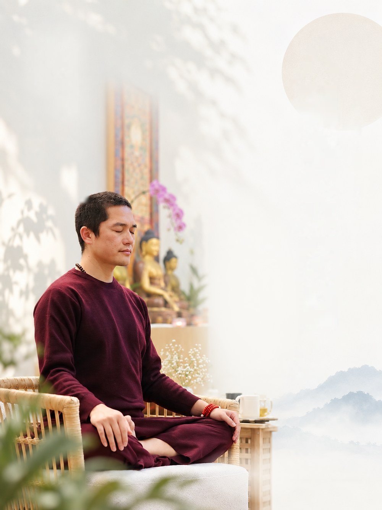

Date: October 10, 2026 7:50 AM (GMT+8) → October 11, 2026 5:00 PM (GMT+8)
Status: 報名中 Open
今年雙十佳節，噶奇美多傑仁波切將帶領我們一起共修八關齋戒。此次法會除了歡迎有經驗的同學外，亦適合初次參加的法友，將透過仁波切的引導與補充資料，讓大家循序熟悉觀音本尊修法的內容。仁波切更期許我們，希望所有參加者都能獲得觀音菩薩滿滿的加持。
本次法會將於壇城設立祈福與超薦牌位，誠摯邀請法友們共襄盛舉，一同累積殊勝功德。
噶奇美多傑仁波切（GarTul Chimi Dorjee Rinpoche）
尊貴的噶奇美多傑仁波切為當代藏傳佛教各大傳承共許的成就者怙主噶千仁波切（Garchen Rinpoche）之上師的轉世，被尊為觀世音菩薩慈悲的化身。仁波切長年以大悲願心引導眾生修持淨化與菩提之道，利益無數有情。
藏傳佛教千手千眼觀音八關齋戒，因持守日數不同而分為兩種，一種是為期兩天兩夜的禁食齋戒，藏語稱作「紐涅」，另一種是為期一天一夜的齋戒，藏語稱作「尼涅」。
兩種齋戒所受戒律內容完全相同，唯前者需於第一日過午不食且第二日斷水斷食，直到第三日清晨五點圓滿，此乃令弟子相續中生起大悲的極為善巧之法，清淨依止上師引導而修持者，往往能因此體驗餓鬼眾生之苦而發起真正的菩提大願，實為殊勝！基於本次因緣，我們將舉辦兩天的尼涅。
尊貴的噶奇美多傑仁波切開示：
傳下此法的祖師帕摩比丘尼，昔日懇切祈請觀音而得本尊親傳「紐涅」法門，精進修持後不僅清淨業障、治癒痲瘋，容貌更勝往昔，可見此法之淨障積福功德不可思議。
2026年10月10日~10月11日 07:50 AM – 5:00 PM
板橋化育道場（Google 地圖「化育文教基金會」）
220 新北市板橋區四川路二段 16 巷 3 號 6 樓
(領袖天下工業園區內)
《聖十一面觀音斷食儀軌》修法
一、現場共修：歡迎法友報名親臨法會現場，一同參與修法，共同累積功德。共修費用採隨喜護持，不設固定金額。
二、登記祈福與超薦牌位：可為在世親友登記祈福牌位，或為已故親人登記超薦牌位，於法會修法回向。
三、隨喜護持法會：可隨喜供燈、供花、供齋或護持法會，共同成就此次修法功德。
四、發心護法志工：若您願意以行動參與，歡迎填寫本表單的志工服務選項。
八戒（不殺生、不偷盜、不淫行、不妄語、不飲酒、不坐臥高廣大床、不著華鬘嚴身、不歌舞觀聽，以及過午不食 ）；全程禁語並依照儀軌拜懺觀想 。
受戒後至隔日清晨。
🔹捷運：板南線「亞東醫院站」3 號出口，面對大馬路南雅南路二段左轉，於第一個路口左轉（可看見亞東醫院)，直行至高爾富路右轉，再於四川路二段左轉，見到「領袖天下工業園區」即左轉進入16巷，道場在3號6樓。步行約 10–12 分鐘。
🔹公車：豫章工商站下車，走路約三分鐘。
🔹停車場：地下室停車場
費用：汽車：平日30元/小時、假日40元/小時；機車：每次20元。
報名涅涅閉關請填寫下列表單。
將於法會前寄發行前通知，請留意所留電子信箱。
附註：八月尼涅已完成登記的學員，其閉關報名資格、回向名單，以及祈福牌位、超薦牌位與護持善款，皆沿用至本場次，將於十月一併進行，無須重新報名或重新登記。
若下方表單顯示不完整，請點上方按鈕以新分頁開啟。